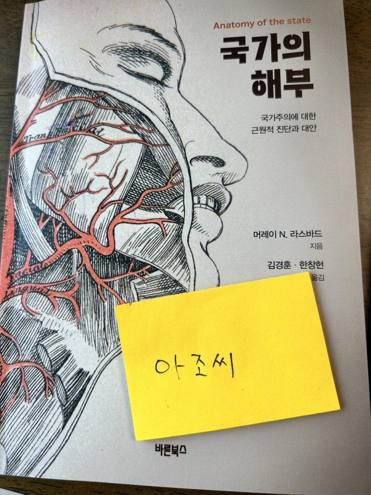
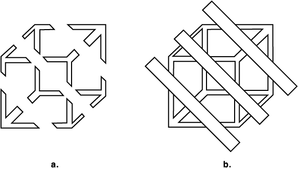

얼마전에 스페이스에서 있었던 토론 중에 이 책에 대한 언급이 기억나서 사람들에게 다시 부탁, 이름을 확인한 후 사서 보
았다. 책이 좀 싸길래 (12000원)오 왜이렇게 싸지 싶었는데 정말 얇다. -_- 빨리 읽으면 두 어시간에도 읽을 듯.
두께랑 내용을 보고서 느낀 것은 '내가 이걸 12000원까지 줄 만한 책이었나....' 이런 느낌.
내용은 자유주의 관련 내용이라고 하는데, 정부에 대해서 비판하고 이에 대한 대안을 제시하는 내용이었다.
비판 부분은 신박한 부분이 많았다. 몇 개만 적어본다.
국가의 의지에 피지배자를 굴복시키는 또 다른 효과적인 방법은 죄의식을 심어 주는 것이다.
모든 개인의 행복 추구를 '비양심적인 탐욕' '물질 만능 주의또' 는 '지나친 풍요'라고, 이윤 창출은 '착취' 또는
'고리 대금업' 이라고 그리고 모든 교환 당사자에게 상호 이익을 가져다 주는 시장 교환은 '이기적'인이라고 비
난 하면서 어떻게 해서든 더 많은 자원을 민간 부문에서 공공 부문으로 이전 해야 한다는 결론을 도출 하는 것이
다.
p37
이 부분을 읽으면서 요즘 ESG의 만행이 떠올랐다면 그것은 너무 멀리 나간 것일까. ㅎㅎ
만약 ' 헌법 불합치' 라는 사법부 판결이 정부 권력을 강력하게 견제한다면, '헌법 합치' 라는 암묵적 또는 명시
적 판결은 더 거대한 정부 권력을 국민이 받아들이게끔 조장하는 강력한 무기이다.
p39
사법부는 명목상 정부의 다른 기관으로부터 독립성을 가진다. 이러한 명분은 사람들이 사법부를 신성불가침의
영역으로 받아들이는 데 아주 중요한 역할을 했다. 그러나, 사법부도 정부 기관의 한 부분이자 같은 무리일 뿐이
고, 행정부와 입법부에 의해 구성원들이 지명된다.
39p
아 이거 어디서 많이 본 생각이 드는데
라는 생각이 든다면 책은 이 책의 느낌이 어떤지 대략 다들 이해 할 거라고 믿는다.
독재시대 불온 서적
그런데 문제는...
이 책이 비판은 참 신박하게 잘 했는데 그에 비해서 대안(?)이라고 제시하는 것들이 참으로 고민이 덜 된 느낌이 풋풋하게
들었다는 것.
어디
군대
시장통에 가서 사람들한테 일년만 차여도 다 배울껄 학자라서 그런가 이론적으로만 고민한 풋풋함이 느껴진다.
가장 어처구니 없었던 부분은 분쟁 해결 방식인데.
시장 논리에 의해서 공정하지 못한 자들은 중재자로서의 지지를 잃고 시장에서 퇴출될 것이라는 의견.
물론 해당 챕터의 저자는 본 내용을 시작하기 전에 주의점이라고 말하면서 "국가가 신체와 재산을 보호하는 자기 역할을
완벽하게 수행하고 있다고 암묵적인 가정을 한다" 라는 표현을 쓰며 여기서 제시하는 방안이 기존의 국가를 대체하는 것
은 아니고 국가가 하고 있는 역할을 민간이 도와서 더 잘 할 수 있다는 것을 깔고 말하는 것이기에 피해갈 만한 구멍을 만
들어두긴 했으나 이런 행동은 나로 하여금 우선 '그럼 내가 지금까지 앞에서 읽은건 뭐지 ? ' 라는 의구심을 들게 한다.
전형적인 A도 맞고 B도 맞는, 독립적으로는 다 맞는 이야기라서 글쓴이가 한 말은 다 맞지만, A와 B를 함께 배치함으로서
읽는이로 하여금 C라는 글쓴이가 원하는 생각의 탈선 (일명 오도)을 일으키는 의도적인 배치로 느껴진다. 원래 뭘 읽을 때
도 영화의 편집 장면이 마음에서는 이어지는 것 처럼 읽는 내용도 마음에서 자연스럽게 연결 시켜 버리거든.
이런건 기래
기가 잘 하는거라 카더라.

원래는 a 처럼 다 떨어져있는 막대기들일 뿐이다.
하지만 선을 세개 만듦으로써 우리 머릿 속에서는 그 막대기들이 입방체로 연결된다.
글을 쓸 때 이걸 노리는 자들이 있다.
조심해야 한다.
뭐 그래 편집방식이나 의도는 그렇다고 치고 항상 '뇌물제공 가능성' 이 있는 상황에서 게임이 반복게임이라는 이유만으로
모든 참여자가 시장원리에 따라 올바른 선택을 할 것이라는 어처구니 없는 결론은 실소를 흘리게 한다.
사람은 언제나 한탕을 노릴 가능성이 있다. 연속 게임에 의한 상호 협력은 '연속게임' 일 때만 가능한 것이다. 한탕을 노리
는 자는 언제나 연속게임 처럼 행동하지만 사실은 이번판이 마지막일 수도 있다는 생각을 가지고 있다. 하지만 본 책에서
는 그런 사악한, 아니 초(?)합
리적인 인간의 마음은 다루지 않았다.
(민간 법원에 대한 이야기 중)
항소법원은 어떻게 선정될 것인가?
다시 강조하지만, 중재자 또는 자유시장 법원과 마찬가지로, 그들은 전문성, 효율성, 정직성, 그리고 청렴성에
대한 명성이 있을 때 선택받을 것이다. 비효율적이거나 편향된 법원들이 논쟁적인 항소심의 중재자로 선택될 가
능성은 분명 거의 없을 것이다. (중략) 오늘날 수많은 민간 중재자가 시장에서 활약하는 것처럼, 분쟁을 겪는 법
원들이 선택한 효율적이고 정직한 항소법원들이 여럿 존재하지 않을 이유가 없다.
p86~87
음... 물론 청렴하고 도덕적으로 '명성있는' 업체 아니 법원이 항소 법원으로 선택될 것이다. 당연하지. 문제는 그 법원이
이번에도 청렴하고 도덕적으로 명성있는 판결을 내려줄 것인가의 문제이다. 그것은 이익 추구를 목표로 하는 기업입장에
서 이번 한 판의 해먹기가 남은 일생동안 청렴하고 도덕적으로 살아가는 것 보다 더 큰 이익을 줄 것인가? 그것이 나에게
어떤 보복을 할 것인가? 의 크기에 의해 전략적으로 선택받을 수 있다.
만약 항소 법원이 한탕 해먹겠다라는 결정을 했을 때 보복을 반드시 받는 구조로 설정이 되어 있다면 이러한 민간 항소 법
원에 대한 글쓴이의 주장도 일리가 있겠으나 그러한 준비 없이 그저 연속게임을 하는 시장 경제에서는 모든것이 다 잘 돌
아갈 것이다 라는 생각은 상당히 풋풋한 느낌이 난다.
장사 한번 해보셔야...
암튼 주말간 읽었는데 오늘은 여기까지 끝~